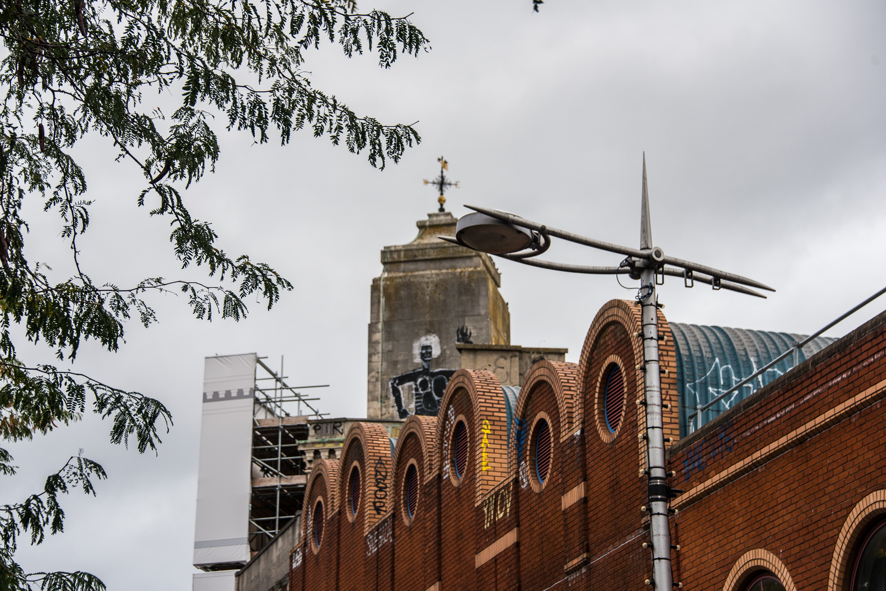
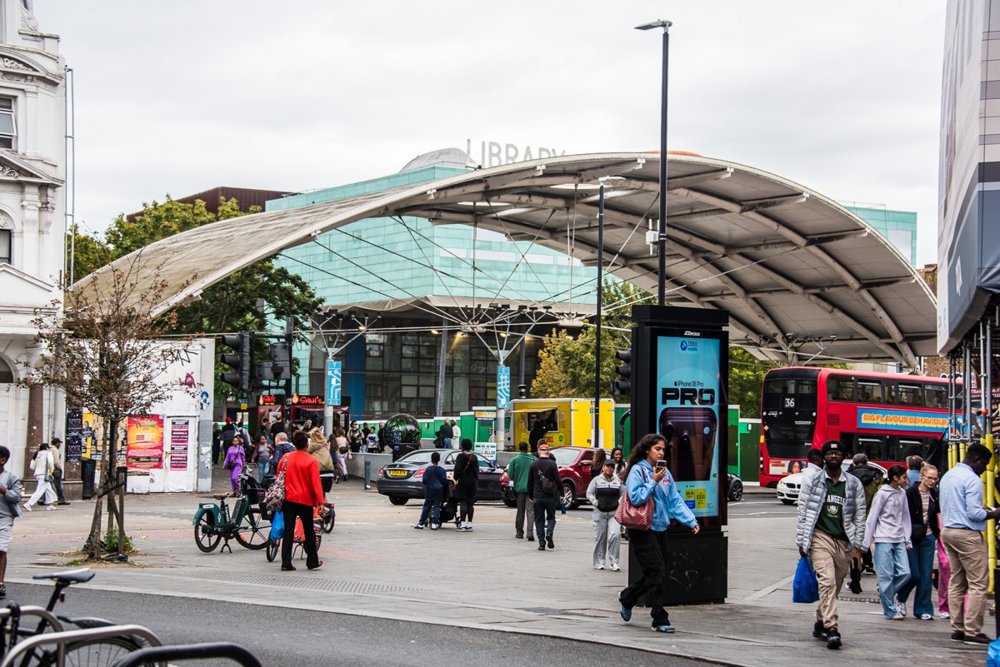
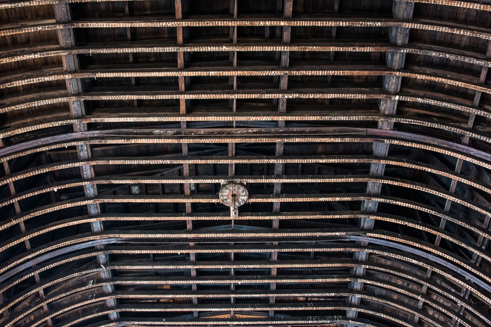
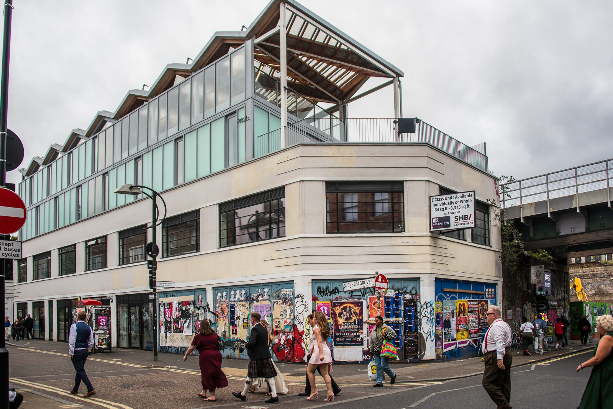

Peckham
in the Balance
The tour gathers, fittingly, under the Peckham Arch — a covered public square at the top of Rye Lane that has itself been fighting for survival for a decade. A guide from Peckham Heritage introduces the walk on a megaphone, for the first time in three years of running this Open House tour. Alongside are a long-time local campaigner and an architect — called in this post simply the campaigner and the architect.
Between them, the three guides represent three different local groups — Peckham Heritage, Peckham Vision and the Peckham Society — who between them have spent decades documenting, and defending, the area's tangible and intangible heritage. The walk is framed around a live, unresolved question, sharpened by a planning battle still working its way through judicial review: what does it take to build, or to destroy, a community?
"We are a volunteer group. This isn't a paid tour, and we're not paid members. We represent three organisations — Peckham Vision, the Peckham Society and Peckham Heritage — in no particular order."
— The Peckham Heritage guide
The walk's backdrop is the Aylesham Centre — the 1988 shopping centre behind the Arch, now the subject of one of South London's most contested redevelopment proposals — but its real subject, as the guides keep returning to, is the accumulated, unglamorous work of decades: campaigns won, campaigns lost, and buildings saved one small grant at a time.
The Peckham Arch
& the Library on Stilts
The 35-metre steel and timber canopy overhead is the Peckham Arch, built in 1993–94 to a design by the architects then known as Troughton McAslan (now John McAslan + Partners), with a light installation by the artist Ron Haselden that responds to changes in barometric pressure. It was the first of three capital projects intended to regenerate a square that had suffered years of decline — followed by Peckham Library in 2000, and the leisure centre beside it.

"I'm genuinely grieving that the council wants to cut the Arch down. Every cell in my body is grieving it."
Plans to demolish the Arch to make way for new housing first surfaced in 2015–16; a 2016 scheme by Carl Turner Architects secured planning permission to replace it with two blocks containing 19 flats, six of them social housing. That permission later lapsed, and Southwark Council has since worked with Spheron Architects on fresh designs for the square, most of which still remove the Arch.
Community campaigners, the architect among them on the public record, have argued the Arch is a rare piece of sheltered public space — and, alongside its mature trees, part of a green link between Rye Lane and Burgess Park — that would be lost for a relatively small number of new homes.
Just beyond the Arch stands Peckham Library, Will Alsop's inverted-L-shaped building on slender angled steel columns, which won the Stirling Prize in 2000. The architect worked in Alsop's circle during this period, and describes the raised reading room — designed to lift the library above street noise while creating covered public space beneath it — as part of a broader interest in organic, hovering forms that Alsop carried through several buildings of the era, including Peckham's own leisure centre and, later, Blizard Building in Whitechapel and North Greenwich's now-demolished Ecology Park pavilion.
The library's environmental design was ahead of its time for a public building of the 1990s: small, deliberately placed windows on the west and south sides limit solar gain, larger glazing faces north, and a night-time purge-ventilation system draws in cool air to bring the building's temperature down before the next day's opening.
How a Village
Became a Through-Road
The architect widens the lens to explain why Peckham developed the way it did. In Roman London, the major route south from the city — the road that became the Old Kent Road, on its way to Canterbury and Dover — passed to the west of Peckham entirely; a minor track towards Lewes, roughly on the line of today's Asylum Road, came closer, but Peckham itself remained a scatter of houses with no strategic importance.
For centuries London Bridge was the only crossing point, which kept development concentrated on the north bank. That changed with a wave of Georgian and early-Victorian bridge-building: Westminster Bridge opened in 1750, Blackfriars Bridge in 1769, Vauxhall Bridge in 1816, Waterloo Bridge in 1817 and Southwark Bridge in 1819. Vauxhall Bridge was the transformative one for Peckham — it put the area on a direct route out of the West End towards the Channel ports, ending its life as a sleepy outlying village for good.
The Surrey Canal followed, bringing timber, iron and building materials into the area; then, in the 1860s, the railways arrived in force. Peckham Rye station opened in 1865, built at the junction of two competing companies — the London, Brighton and South Coast Railway from the south, and the London, Chatham and Dover Railway from the north — largely to funnel Victorian day-trippers on to the Crystal Palace a few miles away.
The Motorway
That Wasn't Built
In the 1970s, Southwark Council planned to demolish the entire north side of Peckham High Street to build a new town hall and a four-lane road — part of a much larger, now largely forgotten scheme by the old London County Council and Greater London Council for an "inner London motorway box" that would have driven six-lane urban motorways through several inner boroughs, in the same spirit as the Westway that was actually built in Hammersmith.
The campaigner, then secretary of the newly formed Peckham Society, set up the Peckham Action Group in 1977 specifically to fight the High Street scheme. The campaign ran until 1982, when the plan was dropped — a victory that also killed off the wider motorway box proposal locally, and left Southwark's postwar planners looking for softer ways to remake the town centre.
Once the motorway threat lifted, the council designated the Holly Grove Conservation Area across much of this part of Peckham — a mix of Georgian and early-Victorian terraces that might otherwise have gone the way of the High Street's north side.
The campaigner and the architect returned to the same instinct decades later: in the 2000s they campaigned to extend conservation protection along the whole length of Rye Lane, against a council that was, by their account, reluctant to accept any constraint on its own redevelopment ambitions. The resulting Rye Lane Conservation Area, and a subsequent Townscape Heritage Initiative grant of just over £2 million (with roughly £500,000 added by the council), funded the restoration of nine buildings along Peckham High Street and Rye Lane — refronted shopfronts, repaired granite plinths, reinstated cast-iron balcony cresting, and cleaned Victorian tilework that had been buried under decades of paint and cheap signage.
Jones & Higgins
& the Bombing of Peckham
By the late nineteenth century, cheap transport and a captive local population had turned Rye Lane into a serious shopping destination — at one point home to six department stores, including Jones & Higgins, a branch of the Co-operative, and Marks & Spencer, most built in the ornate, mix-and-match "free Renaissance" style associated with the architects Jarvis & Son. Jones & Higgins closed in 1980; the building was demolished in 1985, apart from its landmark clock tower, and the site became the Aylesham Centre, opened by Princess Margaret in 1988.
Much of the mid-twentieth-century architecture around Rye Lane exists because of what happened here in the summer of 1944. Records compiled from wartime Air Raid Precautions logs count 29 V-1 flying bombs and 3 V-2 rockets falling on the Peckham and Nunhead area between June and October that year, killing 161 people.
The single worst incident came on 22 June 1944, when a V-1 struck a corset factory near the corner of Nunhead Lane and Peckham Rye, killing around two dozen people — most of them young women working the factory floor. The area to the north of Peckham High Street was among the most heavily hit anywhere in London.
The postwar rebuilding is visible everywhere on this stretch: a 1950s block channelling the optimism of the Festival of Britain stands more or less where a Victorian terrace was flattened, and an entire "yellow brick estate" further along dates from the borough's next wave of public housing in the 1970s and 80s, replacing streets that had themselves replaced Victorian factories.
Restoring Peckham Rye,
One Small Grant at a Time
The station is the work of Charles Henry Driver, a prolific Victorian railway architect also responsible for Denmark Hill and Battersea Park stations, and — in a rather different register — Joseph Bazalgette's flamboyant Abbey Mills and Crossness pumping stations for London's Victorian sewer network. Its design mixes Gothic details (the crocketed capitals) with a strongly classical, symmetrical skyline, under a voluminous Second Empire mansard roof built from riveted wrought iron, a decade or so before steel construction became standard in London.

The architect's practice has worked on the station in stages for around twenty years, starting with a £15,000 grant from a council regeneration programme. The list of small, incremental projects is long: reglazing lost Victorian windows, restoring the original iron-and-stone staircase, reopening the grand first-floor Old Waiting Room — bricked up since 1961 and rediscovered complete with a mosaic floor and traces of its original violet-blue paint scheme under later Southern Railway cream and green — and, most recently, cleaning the Suffolk brick and Bath stone facade and regilding the cast-iron roof cresting that had been stripped from the building at some point in the twentieth century.
"We rediscovered the old station's mosaic floor completely by accident, crawling in with torches. And getting the key to the old waiting room from the station manager — going in there in the dark, seeing where the floor had collapsed into the space below — that was one of the most exciting moments of the whole project."
— The architect
Peckham Vision and the Peckham Society campaigned successfully for the station's Grade II listing in the mid-2000s, alongside one of the surviving eighteenth-century timber-framed houses nearby — a listing that, as the campaigner points out, is often the only thing that stops a building being quietly cleared for redevelopment rather than repaired.
The Planning Inspector
& the Judicial Review
The tour's central grievance is the Aylesham Centre — the 1980s shopping precinct behind the Arch, allocated for housing redevelopment by the council since 2014. Berkeley Homes' scheme, designed by dRMM, was submitted in July 2024 for 877 homes with 35% affordable housing; in December 2024, Berkeley revised it down to 867 homes with just 12% affordable — around 77 homes, split between social rent and intermediate tenures — across sixteen buildings rising as high as 20 storeys.
Southwark Council refused to determine the application in the time allowed; Berkeley appealed on those grounds in May 2025, and a public inquiry followed that October. In May 2026, the government's planning inspector, Matthew Shrigley, dismissed the appeal, ruling that the scheme's height, scale and massing would cause harm to the Rye Lane Peckham Conservation Area and the surrounding townscape that outweighed its benefits — even, he noted, if the affordable housing share had stayed at 35%.
Local campaigners — organised as Aylesham Community Action, alongside the wider Southwark Housing and Planning Emergency group — raised roughly £60,000 in a matter of months to fund legal representation at the public inquiry, taking part as an independent party rather than simply submitting objections.
Berkeley has since applied for a judicial review of the inspector's decision, arguing it undermines national housebuilding policy; as of this tour, that legal challenge is still working its way through the courts, and the guides are careful to say no more about it than that.
The campaigner and the Peckham Heritage guide are emphatic that none of this amounts to reflexive opposition to development. Their objection, as they put it repeatedly on the walk, is to a scheme that would have delivered housing without the infrastructure, ground-floor uses or genuinely affordable homes the area actually needs — a "dormitory" development, in the Peckham Heritage guide's words, rather than a neighbourhood.
The Cricket Bat Factory
& Frank's Café
Just south of the railway line sits Copeland Park and the Bussey Building — a long, narrow Victorian industrial complex, built in phases from the 1880s, that manufactured cricket bats and, during the First World War, military equipment. Around 2005, the council's plans to demolish the site for a tram depot became the founding campaign of Peckham Vision; the buildings survive today under family ownership, home to a dense mix of small creative businesses, studios and the CLF Art Café.
"This is a place where people come together — not just for events, but as somewhere to sit around and simply be with the rest of the community."
Above the site's multi-storey car park, Frank's Café and the Bold Tendencies art programme have run a summer rooftop bar and exhibition space for around fifteen years, giving Peckham one of its more unlikely views back across the city — a use the guides hold up as proof that adapting an existing industrial building can outperform demolishing it, in cultural terms as much as in the carbon cost avoided.
Pioneering Peckham,
100 Years On
The Peckham Heritage guide closes the walk by flagging a follow-on event at St Mary's Church, Nunhead, marking a double centenary a quarter-mile from Peckham Rye station. In 1926, doctors George Scott Williamson and Innes Pearse opened the Pioneer Health Centre at 142 Queen's Road — the "Peckham Experiment," a pioneering study of preventive community health that ran, on and off, until 1950. A few doors away at number 164, from 1922 until his death in 1947, the Jamaican-born GP Dr Harold Moody ran his practice and, in 1931, founded the League of Coloured Peoples, one of Britain's first organised civil rights movements.

"Heritage, in the end, is what it means to us individually and personally — and that's exactly what's missing from the way most modern development gets decided."
The event — a short walking pilgrimage between the two sites followed by an exhibition and open conversation in the church — is billed around the same question that runs through this whole tour: whose heritage gets remembered, and whose gets built over.